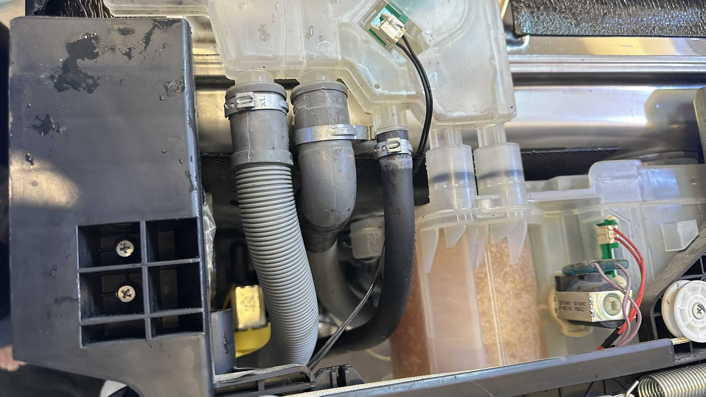
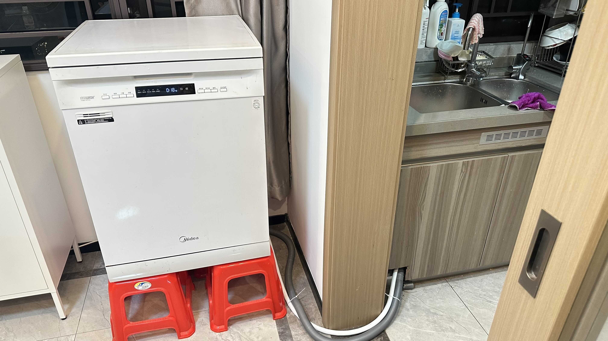

洗碗机维修 | 原创，AI翻译
最近，我把洗碗机从父母家搬到了同城的自己家中。这台洗碗机是美的13 Q7型号，2019年夏天我在北京工作时购买的。2020年初，我通过德邦物流将它运到了广州。
我通过高德地图的家电维修服务找到了一位师傅，支付了750元请他帮忙维修并安装到我家。过程有点曲折，我们从下午3点一直忙到晚上8点才最终搞定。中途他还出去买了几次配件。
有两三次我们以为修好了，启动洗涤程序后不久却发现地板上全是水。第一次发现是洗碗机的排水管破了个洞，这个问题很快被发现并修复。但底部仍在漏水，于是我们用支架把洗碗机垫高，以便观察漏水点——就像检修汽车那样。
拆开洗碗机检查后，我们发现内部有几处水管破损。师傅用胶带进行了临时修补。可惜后来又发现另一处漏点，只得再次处理。
终于在晚上8点左右，机器恢复正常。整个过程让我联想到软件开发——事后回想，这些问题其实都很自然合理。它们只是超出了我们的预期，但完全符合材料和时间的客观规律。

图片来源：自行拍摄

图片来源：自行拍摄